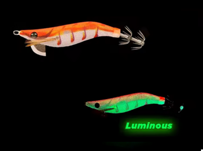

Egis Low Cost
Letoyo Modelo G – Análisis completo

🎨 Características
Color base:
Naranja brillante con franjas rojas verticales y vientre blanquecino perlado, un clásico patrón de atracción para aguas variadas.
Ojos:
Negros con un ligero halo dorado, aportando un punto de contraste fuerte que simula a un crustáceo real.
Brillo:
Cuerpo con emisión luminiscente verde intensa, de gran alcance visual bajo el agua
Acabado:
Textura trenzada de buena transparencia, que permite reflejar luz de manera natural, aumentando su efecto visual al moverse.
🌤️ Condiciones ideales de uso
☁️
Días nublados:
El naranja resalta con fuerza, siendo muy visible incluso en fondos arenosos o de roca clara.
🌊
Aguas azules o verdosas:
Mantiene buena presencia visual sin perder naturalidad.
🌅
Atardecer o amanecer:
Muy eficaz cuando los calamares comienzan su actividad; el contraste entre el naranja y el fondo oscuro resulta irresistible.
🌙
Noche:
El brillo verde 💡 mantiene visibilidad constante, asegurando atracción incluso con mínima luz ambiental.
🪸
Fondos rocosos o mixtos:
Ideal para destacar en fondos complejos, combinando luminosidad y color llamativo.
🧠 Comportamiento esperado
👉 Egi de atracción activa, diseñado para provocar reacciones rápidas en calamares curiosos o en fase de caza.
👉 Excelente para situaciones donde los colores suaves o naturales ya no provocan ataques.
👉 La combinación de naranja + luminiscencia verde ofrece doble estímulo: visibilidad de día y atracción nocturna.
👉 Ideal cuando los calamares están agresivos o en competencia alimentaria.
⚙️ Resumen práctico
Condición
Eficiencia
☀️🌊 Día soleado / agua clara
🟢🟢 Muy alta
☁️💙 Día nublado / aguas azules
🟢 Alta
🌙🌑 Noche / aguas oscuras
🟢🟢 Muy alta
🦑😴 Calamares pasivos
🟡 Media
🦑🔥 Calamares agresivos
🟢🟢 Muy alta
🛒 Comprar opción 1
🛒 Comprar opción 2
🛒 Range Hunter
🛒 Neon Bright
🛒 Egi OH Live Neon